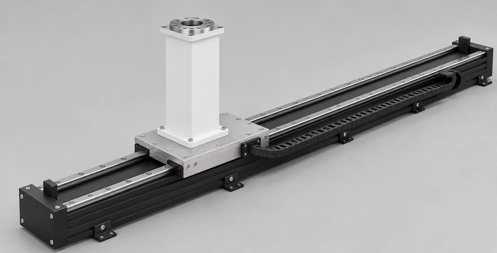
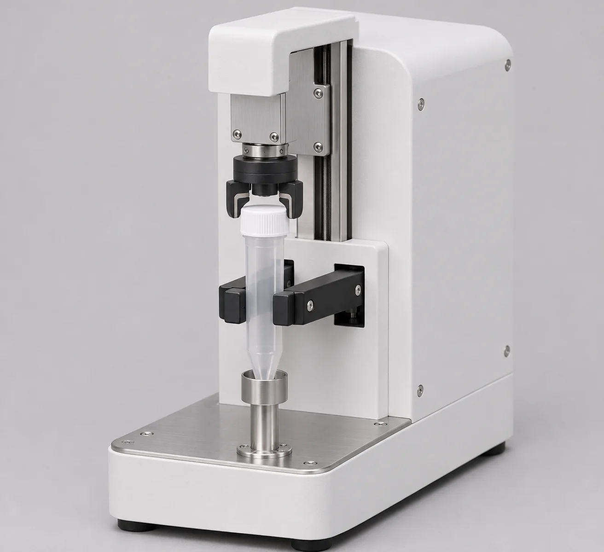
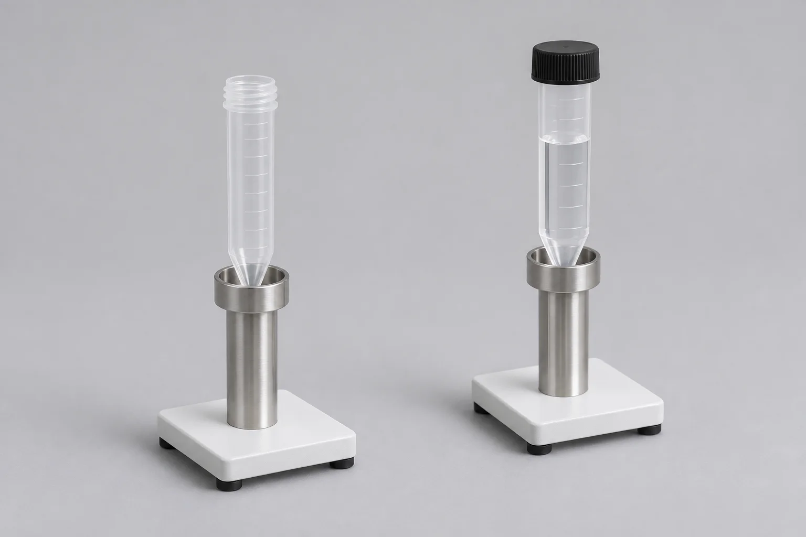
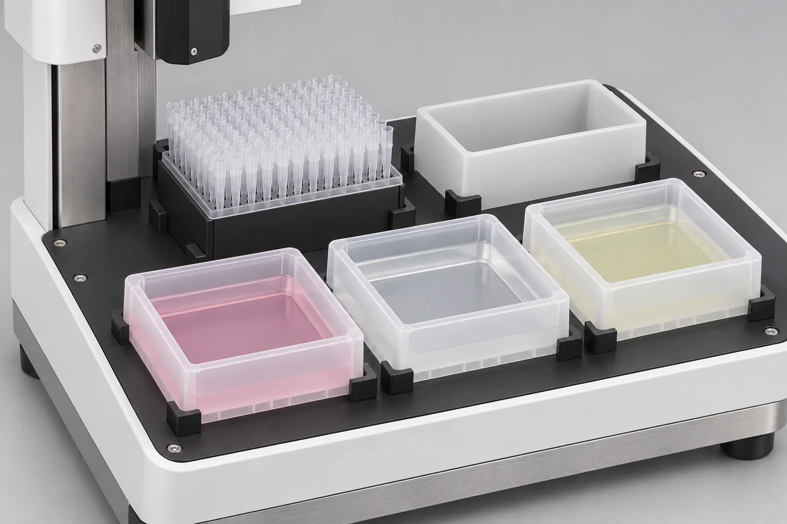
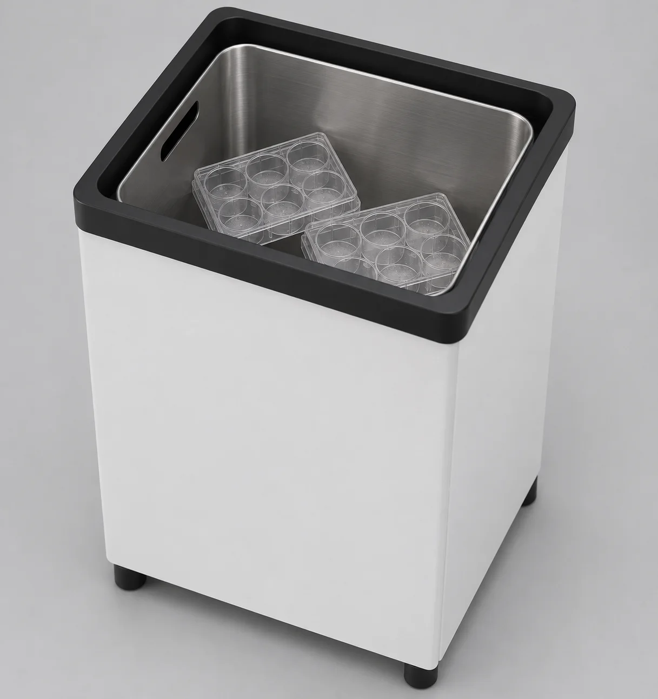
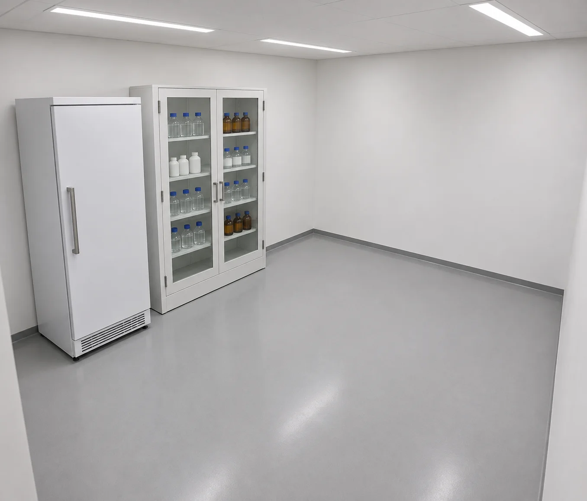
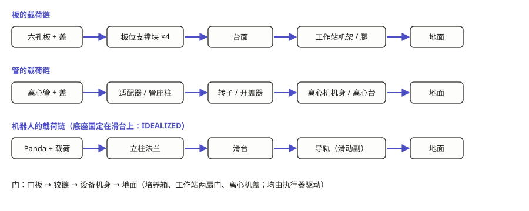

World Building · 审批点② · cell-passaging-lab
参考图与 plan
细胞传代黑灯实验室（全流程）。这一页通过之后，建模、仿真、渲染都由 agent 自主推进。
01参考板
参考图只用来冻结外观风格，尺寸一律以第 02 节为准。






02尺寸表
来源类别分三种：标准锚点、设计假设、实测。
单位为 m，Z 轴朝上，世界坐标与 02-proposal/analysis/layout.py 一致：导轨沿 +X，位于 y = 0；南侧 y < 0，北侧 y > 0。参考图只决定外观风格，所有尺寸以本表为准。来源分三类：标准锚点（外部标准或规格书）、设计假设（本项目自定）、实测（从复用资产或预演中测得）。
布局
| 项 | 值 | 来源类别 | 依据 |
|---|---|---|---|
| 导轨行程 | x = 0 … 2.95 | 实测 | 预演 v3：全部 12 个取放位姿都在行程内；行程终点和培养箱外门铰链平面（x = 3.20）之间留 0.25 |
| 机器人基座高 | z = 0.60 | 设计假设 | 培养箱 3、4 层（0.675 / 0.795）、工作站台面（0.914）、离心机孔口（约 0.95）都要够到，预演 v3 已验证 |
| 培养箱 | 中心 (2.85, −1.00)，正面朝 +Y，底座顶 z = 0.12 | 实测 | 预演 v2 → v3：垫高后门下沿高过导轨梁 |
| 观察站 | 原点 (1.75, −0.78, 0.60)，抽屉朝 +Y | 实测 | 预演 v3 |
| 离心机 | 原点 (0.55, −0.70, 0.70)，正面朝 +Y | 实测 | 预演 v3（比 v2 挪近导轨 0.10） |
| 开盖器 / 配平管架 | (1.05, −0.56, 0.70) / (0.08, −0.56, 0.70) | 实测 | 预演 v3 |
| 离心台 | 中心 (0.58, −0.72)，1.24 × 0.54，台面 z = 0.70 | 设计假设 | 承托离心机、开盖器、配平管架 |
| 移液工作站 | 原点 (1.55, 1.12, 0)，前门朝 −Y | 实测 | 预演 v3；前门在 y = 0.74 |
| 固体废物箱 | 中心 (0.30, 0.70, 0) | 实测 | 预演 v3 |
| 房间 | x −0.45 … 3.40，y −1.50 … 1.65，高 2.6 | 设计假设 | 包住全部设备，四周留通道 |
导轨与滑台立柱（新建）
| 项 | 值 | 来源类别 | 依据 |
|---|---|---|---|
| 导轨梁 截面 宽 × 高 | 0.24 × 0.10 | 设计假设 | 参考图风格；预演代理 |
| 导轨梁 长度 | 3.25（行程 2.95 + 两端各 0.15） | 设计假设 | 端部挡块 |
| 滑台 | 0.30 × 0.30 × 0.02 | 设计假设 | 承托立柱 |
| 立柱 截面 | 0.16 × 0.16（底座法兰 0.28 × 0.24，取自 robot_pedestal_lumen_v02） | 实测 | 底座 v02 顶法兰 |
| 立柱 高度 | 滑台顶 0.12 → 基座顶 0.60 | 设计假设 | 机器人基座高 |
| 滑台驱动 | 位置执行器，kp 按导轨加机器人的总质量整定 | 设计假设 | 仿真阶段核对稳态误差（薄切片 01 抽屉的教训） |
移液工作站 v03（修改 workstation_lumen_v02）
| 项 | 值 | 来源类别 | 依据 |
|---|---|---|---|
| 台面高 | 0.914 | 实测 | v02 nest_support 顶面 |
| 板位 A / B / C（前排） | 局部 x = −0.25 / 0 / 0.25，y = −0.16 | 实测 | v02 nest_support |
| 后排 | 局部 (0, 0.075) 储液槽 ×3；(0.25, 0.075) 废液槽；(−0.25, 0.075) 吸头盒 | 设计假设 | 后排只给龙门用 |
| 管座（B 位前沿） | 局部 (0, −0.20)；座面 z = 0.919；柱 Ø0.024 | 设计假设 | 在龙门 Y 行程内（≥ −0.22）；周围 ±70 mm 内没有宽于 ±50 mm 的结构 |
| 龙门行程 X、Y | X ±0.30，Y ±0.185 | 实测 | v02 关节范围 |
| 龙门行程 Z（加长） | −0.012 … +0.16 | 设计假设 | 原上限 +0.063 够不着 15 mL 管（管口 1.042）；加长后吸头下端最高约 1.08 |
| 门 | 两扇，0–110°，铰链 x = ±0.554，y = −0.382 | 实测 | v02 |
| 废吸头盒 | 台面开孔局部 x 0.05–0.20，y −0.105 至 0.015；盒子坐在 z = 0.750 的托架上 | 实测 | 1104 评估 R05 |
离心机 v04（修改 centrifuge_lumen_v03）
| 项 | 值 | 来源类别 | 依据 |
|---|---|---|---|
| 机身 | 0.46 × 0.52，盖关闭时高约 0.32 | 实测 | v03 碰撞几何 |
| 转子 | 8 个孔，倾斜 30°，管底在半径 0.137 处 | 实测 | v03 pocket_frame |
| 装载孔 | 只保留 2 个（相差 180°），其余合并为转子静态几何 | 设计假设 | 碰撞体从 1632 个精简 |
| 盖 | 0–100°，铰链 (0, 0.238, 0.296) | 实测 | v03 lid_hinge |
| 离心管 | 最大直径 22.2 mm，长 122.8 mm，质量 10.2 g | 实测 | v03 specimen |
| 管盖 | 拆成独立刚体：Ø22.2 × 0.018 | 设计假设 | 开盖器需要 |
开盖器（新建）
| 项 | 值 | 来源类别 | 依据 |
|---|---|---|---|
| 管座柱 | Ø0.024，柱顶（座面）z = 0.78（台面 + 0.08） | 设计假设 | 预演 v2：细柱 |
| 夹爪 | 从后方伸出，宽 ±0.018，夹紧行程 0 … 0.008 | 设计假设 | 管子前方和两侧不能有结构 |
| 旋盖头 | 竖直行程 0 … 0.06，可连续旋转 | 设计假设 | 盖在对准后用约束挂上（理想化） |
| 机身 | 0.12 × 0.10 × 0.26，在管子后方 | 设计假设 | 预演 v3 |
管座、配平管架、储液槽、固体废物箱（新建）
| 项 | 值 | 来源类别 | 依据 |
|---|---|---|---|
| 配平管架 | 单柱 Ø0.024，座面 z = 0.73 | 设计假设 | 同管座 |
| 储液槽、废液槽 | SBS 外形 0.1278 × 0.0855，高 0.031 | 标准锚点 | ANSI/SLAS 1-2004 |
| 固体废物箱 | 0.40 × 0.30 × 0.55，壁厚 0.005，开口朝上 | 设计假设 | 参考图；板从箱口上方 0.10 处松手 |
| 六孔板 | 0.12776 × 0.08548 | 标准锚点 | ANSI/SLAS 1-2004；复用 sixwell |
03载荷链

04plan 任务
- 一个场景，分 5 期累加。每期都走完建模 → 仿真 → 位姿绑定与渲染，出一段成片；后一期在前一期的场景和动作序列上继续往下加。第 5 期从头到尾连续跑一次，出完整成片。
参考图（04-reference）
- ☐ 新建设备的参考图：导轨与滑台立柱、开盖器、管座与配平管架、储液槽与废液槽、固体废物箱、房间与陈设。每张图都要查看，记下实际像素尺寸，提示词全部保留。
- ☐ 尺寸表
dimensions.md：每项注明来源类别（标准锚点 / 设计假设 / 实测）。复用资产的尺寸以审查实测为准。 - ☐ 载荷链图：板 → 板位 → 台面 → 工作站机架 → 地面；管 → 管座或孔 → 转子 → 离心机 → 台；机器人 → 滑台 → 导轨 → 地面。
- ☐
wb review生成审批点②页面；验证门reference判 PASS；审批点②自审。
建模（05-modelling，按期累加）
- ☐
design.py作为唯一参数源，写出design.json；布局取自layout.py的 LAYOUT。 - ☐ 期 1：导轨与滑台（
rail__slide、rail__drive）；工作站 v03（补执行器、放开重力、Z 轴加长到 +0.16 m）；培养箱底座；固体废物箱；房间与台面。 - ☐ 期 2：龙门执行器；吸头盒与吸头；储液槽、废液槽；废吸头盒下沉安装；工作站管座。
- ☐ 期 3：开盖器（
dc__*）；离心机 v04（只保留 2 个装载孔，转子分度，管盖独立）；离心管与配平管；配平管架。 - ☐ 期 4：计数板、子板初始位置（培养箱 4 层）。
- ☐ Blender 视觉模型与 GLB 导出（只导出白名单内的 VIS_/ROOT_ 对象）、映射表、预览渲染。
- ☐ 验证门
modelling判 PASS（M1–M7）。
仿真（06-simulation，按期累加）
- ☐ MjSpec 装配全场景；复用薄切片 01 的控制做法（速度前馈、重力补偿、noslip、硬指垫）。
- ☐ 轨迹：沿预演路线逐段规划，带盖的板沿用"圆弧 + 偏航插值"，再叠加导轨平移；每期先做运动学初筛，再跑动力学。
- ☐ 动作日志：每一步记录开始和结束时刻、理想化事件（约束挂上和解除，以及挂上时的对准误差）、液体的符号化收支。
- ☐ 每期：名义流程，以及本期新增的负例（先做探针）。
- ☐ 验证门
simulation按期判 PASS。
位姿绑定与渲染（07-render，按期累加）
- ☐ 视觉根和 MuJoCo body 一一对应；按白名单导入；先渲几帧，测吞吐、定机位。
- ☐ draft 档位渲染每期的成片，用 ffmpeg 叠字幕（当前步骤、教学等待倒计时、"模拟数据 / 理想化"标注）。帧数和时长不变。
- ☐ 每期的成片和关键帧归档到
07-render/phaseN/；第 5 期是完整成片。 - ☐ 验证门
render判 PASS（V1–V4）。
收尾
- ☐ 每个阶段的阶段日志、经验记录；汇总复盘，其中要对比本项目和薄切片 01 的仿真返工次数；更新 skill。
- ☐ 学习页 HTML；HF 上传；GitHub 每期一个 issue，开工时建、做完关。
05冻结门限
冻结于 2026-11-05，之后不得放宽。机器可读的副本是 thresholds.json，验证门只读这个文件。runner 的停止条件与最终验收条件分开命名。
仿真
| ID | 期 | 门限 | 值 | 来源 |
|---|---|---|---|---|
| S1 | 1 | 预静置最后 1 s，所有自由体的线速度 | < 1 mm/s | 薄切片 01 |
| S2 | 1 | 未被搬运的自由体，相对它上一次落定位置的漂移 | ≤ 0.1 mm | 薄切片 01 |
| S3 | 1 | 任意接触对的最大穿透 | ≤ 0.25 mm | 薄切片 01 |
| S4 | 1 | 禁止接触：Panda 或指具碰到设备外壳、门、台面、工作站内部结构的次数（夹持对象和指定的放置面除外） | 0 | 薄切片 01，扩展到全部设备 |
| S5 | 1 | 带盖的板在搬运中，盖相对板的位移：xy | ≤ 2 mm | 薄切片 01 |
| S6 | 1 | 带盖的板在搬运中，盖相对板的位移：z | ≤ 1 mm | 薄切片 01 |
| S7 | 1 | 每次放板松爪之前，支撑面对板的法向力合计不低于 0.8 ×（板 + 盖）重量，并持续 | ≥ 0.1 s | 薄切片 01 |
| S8 | 1 | 每次放置后，物体到目标点的距离（板放到板位、抽屉、隔板；管放到管座、孔、架） | ≤ 3 mm | 薄切片 01 |
| S9 | 1 | 终态时所有门（培养箱两扇、工作站两扇）和离心机盖的关节角 | < 0.1° | 薄切片 01 |
| S10 | 1 | 终态时观察站抽屉的位移 | < 3 mm | 薄切片 01 |
| S11 | 1 | 不伪造支撑：板和盖上的 equality 约束数为 0；mocap 数为 0；小件约束只在夹持期间生效 | 0 / 0 / 是 | 薄切片 01 |
| S12 | 1 | MuJoCo 告警数；状态中出现 NaN 或 Inf | 0 / 无 | 薄切片 01 |
| S13 | 1 | 关节位置在限位内，执行器力在 forcerange 内 | 全程满足 | 薄切片 01 |
| S14 | 2 | 小件约束挂上时的对准误差：位置 / 角度 | ≤ 1 mm / ≤ 3° | 新增，对应 R1、R6 |
| S15 | 2 | 约束挂上那一刻小件的位姿跳变（不允许瞬移） | ≤ 0.1 mm | 新增，对应 R1 |
| S16 | 3 | 离心机联锁：转子转动时盖的角度；开盖时转子的角速度 | < 0.5° / < 0.1 rad/s | 新增 |
| S17 | 3 | 离心时两支管的孔位相差 180° | ± 1° | 新增 |
| S18 | 2 | 每次吸液或排液时，吸头尖端在目标孔、管或槽的开口内（距开口边缘 ≥ 2 mm），并且低于开口 | 全部满足 | 新增 |
| S20 | 1 | 动作日志：本期每一步都有开始和结束记录，并按工艺顺序 | 完整 | 新增 |
| S21 | 5 | 完整运行终态：子板在培养箱 3 层（≤ 3 mm）；母板和计数板在固体废物箱内；两支管在架上；门全关；14 步全部记录 | 全部满足 | 新增 |
仿真负例（必须判 FAIL；每期开工前先做危险探针）
| ID | 期 | 负例 | 期望 |
|---|---|---|---|
| N1 | 1 | 去掉观察站抽屉托面的碰撞后放板 | 板下落超过 5 mm；S7 判 FAIL |
| N2 | 1 | 板初始位置比隔板低 2 mm（过插） | S3 判 FAIL |
| N3 | 1 | 夹取高度偏高 11 mm，指垫夹到盖裙 | S5 或 S6 判 FAIL |
| N4 | 1 | 工作站门没开，机械臂照常伸进去 | S4 判 FAIL |
| N5 | 2 | 装吸头时喷嘴偏移 3 mm | S14 判 FAIL（约束拒绝挂上，或对准误差超限） |
| N6 | 2 | 分液目标偏移 10 mm，落到板沿上 | S18 判 FAIL |
| N7 | 3 | 夹管偏移 5 mm | S14 判 FAIL |
| N8 | 3 | 离心机盖开着，转子就开始转 | S16 判 FAIL |
| N9 | 3 | 配平管放在相邻孔（相差 45°） | S17 判 FAIL |
| N10 | 4 | 接种时 A 位上没有子板 | S18 判 FAIL |
建模
| ID | 门限 |
|---|---|
| M1 | lab_assets.xml 能用 MuJoCo 3.17 编译；关节范围与 thresholds.json 一致（工作站门 0–110°，离心机盖 0–100°，导轨 0–2.95 m，龙门 X ±0.30、Y ±0.185、Z −0.012 至 +0.16 m） |
| M2 | 关键支撑面高度：工作站板位 0.914 m，管座 0.919 m，开盖器管座柱 0.78 m，配平管架 0.73 m，培养箱底座 0.12 m；误差 ≤ 1 mm |
| M3 | 导出的 GLB 重新读回后，没有碰撞代理 |
| M4 | 映射表覆盖 design.json 的全部部件 |
| M5 | 静置 1 s：没有穿透超过 0.25 mm 的接触；门和盖保持关闭（< 0.1°） |
| M6 | 偏置宽指的开口范围覆盖 110–190 mm |
| M7 | 12 个执行器齐全：导轨；龙门 X、Y、Z、退吸头；工作站两扇门；离心机盖、转子；开盖器夹爪、旋盖头升降、旋盖头旋转 |
参考图
| ID | 门限 |
|---|---|
| R1 | 参考图存在、为 WebP，并且已查看（尺寸已记录） |
| R2 | 尺寸表每项都注明来源类别 |
| R3 | 载荷链图存在 |
渲染
| ID | 门限 |
|---|---|
| V1 | 场景里没有碰撞代理对象 |
| V2 | 帧数 = round(仿真时长 × 30)；不加速、不跳帧 |
| V3 | 抽查若干帧，Blender 世界位姿与仿真记录的误差 ≤ 1e-5 |
| V4 | 成片能解码，帧数和时长都对 |